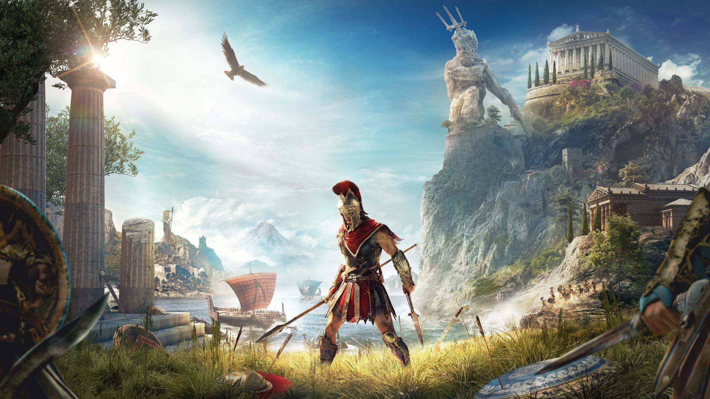
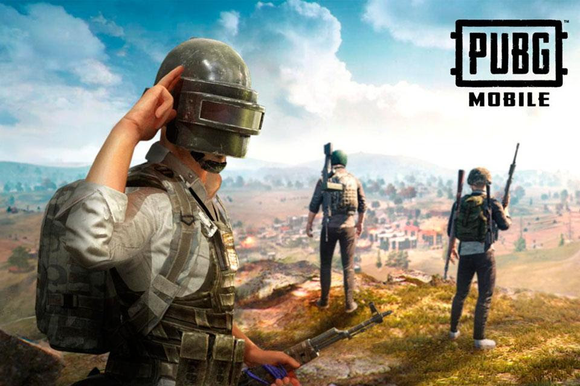
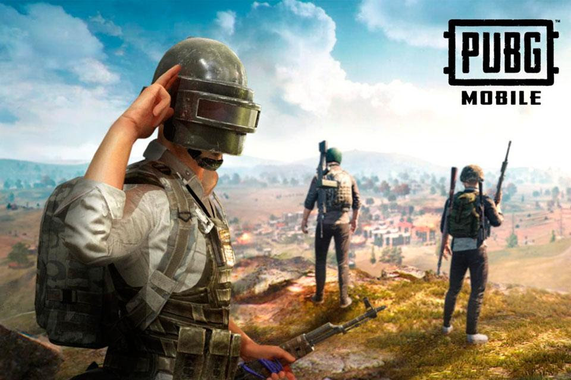

Assassin's Creed Odyssey
Assassin's Creed Odyssey é, tranquilamente, o melhor game da franquia desde o final da saga de Ezio Auditore. Com maestria, soube aprofundar conceitos ainda introduzidos à série por meio de Origins e transformou completamente a ideia de experiência de viver na pele de um Assassino.

 
